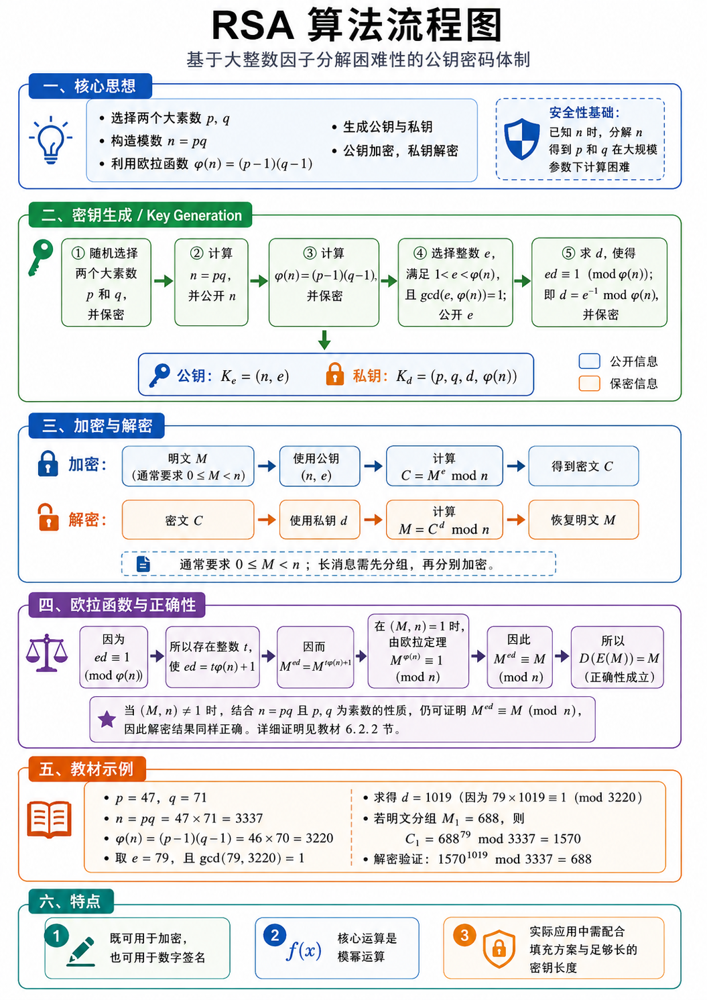
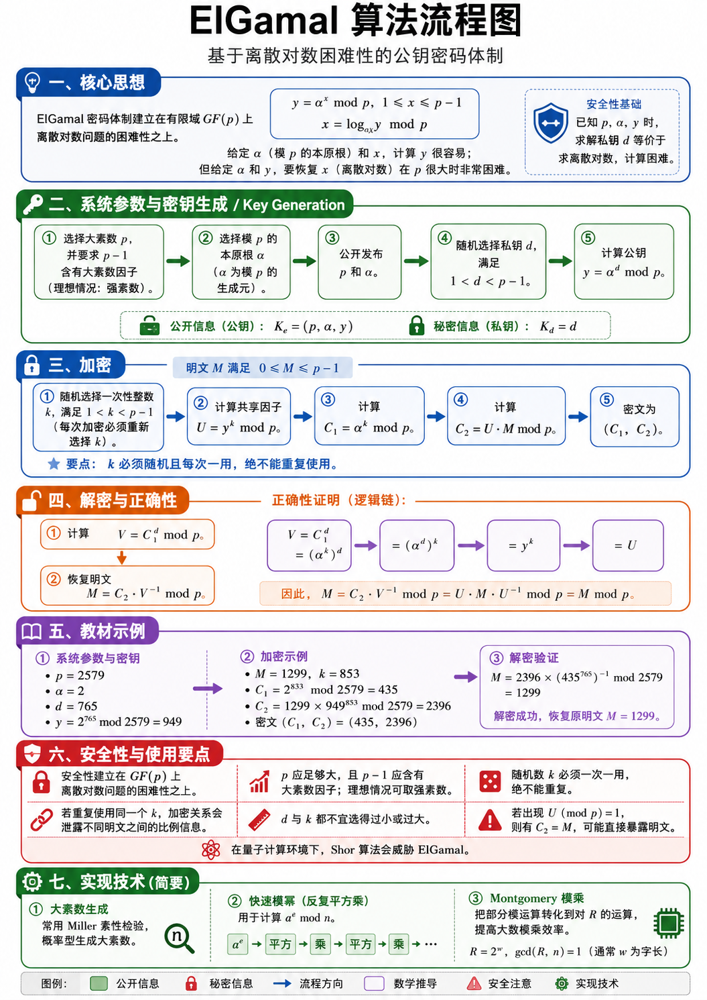

算法介绍-RSA&EIGamal
RSA算法介绍

核心思想：RSA 先把“加密问题”转成“模幂运算问题”
RSA 属于公钥密码体制，它和对称加密算法的思路有明显差异：通信双方使用两类密钥，一类可以公开，另一类需要保密。公开密钥用于加密，保密密钥用于解密。
整个算法从两个大素数开始，记为 \(p\) 和 \(q\)。这两个数选出来之后，要计算
这里的 \(n\) 称为模数。RSA 后面的加密和解密都围绕“对 \(n\) 取模”展开。也就是说，明文会被转成一个小于 \(n\) 的整数 \(M\)，然后通过模幂运算得到密文；密文再通过另一个模幂运算还原为明文。
然后介绍一下欧拉函数：
这个公式成立的前提是 \(p\) 和 \(q\) 都是素数，且 \(n=pq\)。\(\varphi(n)\) 表示从 \(1\) 到 \(n-1\) 中与 \(n\) 互素的整数个数。RSA 后面选择加密指数 \(e\)、计算解密指数 \(d\)，都要依赖 \(\varphi(n)\)。
这一块的安全性基础来自一个计算困难问题：外部人员可以看到 \(n\)，从 \(n\) 反推出 \(p\) 和 \(q\) 的过程需要做大整数因子分解。在实际参数足够大的情况下，这个分解过程需要极高计算成本。掌握 \(p,q\) 的人可以计算 \(\varphi(n)\)，再计算私钥；只看到 \(n\) 的人很难走完这一链条。
密钥生成：先构造公开计算规则，再构造保密反向指数
RSA 的关键就在这一部分，因为后面的加密和解密公式很短，真正决定算法结构的是 \(p,q,n,\varphi(n),e,d\) 之间的关系。
第一步随机选择两个大素数 \(p\) 和 \(q\)，并把它们保密。
这里强调“大素数”，是因为 \(p\) 和 \(q\) 太小会让因子分解变得容易。
教材示例为了方便手算使用 \(47\) 和 \(71\)，真实系统会使用远大于这个规模的素数。
第二步计算
并公开 \(n\)。\(n\) 是后续模运算的公共模数。加密和解密的末尾都会对 \(n\) 取模。公钥里会包含 \(n\)，所以任何发送者都能使用同一个模数完成加密。
第三步计算
并保密。\(\varphi(n)\) 的作用是连接 \(e\) 与 \(d\)。知道 \(p\) 和 \(q\) 之后，即可直接算出 \(\varphi(n)\)。外部人员只知道 \(n\)，则需要先分解 \(n\) 才能得到 \(p,q\)，进而得到 \(\varphi(n)\)。
第四步选择整数 \(e\)，使它满足
这里的 \(\gcd(e,\varphi(n))=1\) 表示 \(e\) 与 \(\varphi(n)\) 互素。这样做的意义是保证 \(e\) 在模 \(\varphi(n)\) 意义下存在乘法逆元。这意味着后面才能找到一个 \(d\)，使 \(e\) 和 \(d\) 相乘后对 \(\varphi(n)\) 取模余 \(1\)。
第五步求 \(d\)，使得
这表示 \(d\) 是 \(e\) 关于模 \(\varphi(n)\) 的乘法逆元，常写成
\(d\) 是私钥中最核心的部分。图中给出最终密钥形式：
这是公钥，可以公开给发送者。发送者拿到 \(n\) 和 \(e\)，就可以完成加密。
这是私钥相关信息，需要保密。实际系统中通常重点保存 \(d\)，同时也会保存 \(p,q\) 以便利用中国剩余定理提升解密效率。教材写成 \(p,q,d,\varphi(n)\)，是为了把理论推导中用到的量完整展示出来。
加密与解密：同一个模数下的两次指数运算
加密时，先把明文转成整数 \(M\)，通常要求
然后使用公钥 \((n,e)\) 计算：
这里的 \(C\) 就是密文。公式含义是：先计算 \(M^e\)，再除以 \(n\) 取余数。实际计算中直接计算 \(M^e\) 会非常大，所以程序会使用快速模幂算法，在乘法过程中持续取模，使数值始终保持在可处理范围内。
解密时，接收者拿到密文 \(C\)，使用私钥指数 \(d\) 计算：
这个结果会回到原来的明文整数 \(M\)。从形式上看，加密和解密都是模幂运算，区别在于加密使用公开指数 \(e\)，解密使用保密指数 \(d\)。
图中补充了“长消息需先分组”。这是因为单个明文整数必须落在 \(0\le M\) 的范围内。实际文本、文件或网络数据会先被编码成字节串，再按照密钥长度和填充方案切分为多个块，每个块分别进入 RSA 运算。实际工程中还会使用 OAEP 等填充方案，使同一明文在多次加密时产生更安全的密文形式。
欧拉函数与正确性：为什么解密能还原明文
这里要说明的是：加密得到
再解密
最终为何会回到 \(M\)。
由于 \(d\) 是 \(e\) 在模 \(\varphi(n)\) 意义下的乘法逆元，所以有
这个同余式等价于存在某个整数 \(t\)，使得
把这个关系代入解密表达式：
再用 \(ed=t\varphi(n)+1\)，得到
当 \(M\) 与 \(n\) 互素时，根据欧拉定理：
于是
所以解密结果就是原明文。
教材中还进一步讨论了 \(M\) 与 \(n\) 含有公共因子的情形。由于 \(n=pq\)，且 \(p,q\) 都是素数，公共因子只能落在 \(p\) 或 \(q\) 相关的情况中。教材通过分别考察模 \(p\) 和模 \(q\) 下的同余关系，再合并到模 \(n\) 下，说明解密结果仍然会回到 \(M\)。这一部分保证了 RSA 正确性覆盖更完整的明文范围。
这块内容的核心链条可以整理为：
它说明了 \(e\) 和 \(d\) 的选择方式具有明确目标：让两次指数运算在模 \(n\) 意义下互相抵消。
算法实现
import secrets
from dataclasses import dataclass
from math import gcd
@dataclass(frozen=True)
class PublicKey:
n: int
e: int
@dataclass(frozen=True)
class PrivateKey:
n: int
d: int
p: int
q: int
phi: int
def extended_gcd(a: int, b: int) -> tuple[int, int, int]:
"""
扩展欧几里得算法。
返回 g, x, y，使得 ax + by = g，其中 g = gcd(a, b)。
"""
if b == 0:
return a, 1, 0
g, x1, y1 = extended_gcd(b, a % b)
x = y1
y = x1 - (a // b) * y1
return g, x, y
def mod_inverse(a: int, m: int) -> int:
"""
求 a 在模 m 意义下的乘法逆元。
也就是求 x，使得 ax ≡ 1 (mod m)。
"""
g, x, _ = extended_gcd(a, m)
if g != 1:
raise ValueError("a 与 m 互素时才存在模逆元")
return x % m
def is_probable_prime(n: int, rounds: int = 40) -> bool:
"""
Miller-Rabin 素性测试。
返回 True 表示 n 具有极高概率为素数。
"""
if n < 2:
return False
small_primes = [
2, 3, 5, 7, 11, 13, 17, 19, 23, 29,
31, 37, 41, 43, 47
]
for p in small_primes:
if n == p:
return True
if n % p == 0:
return False
# 将 n - 1 写成 2^s * d，其中 d 为奇数
d = n - 1
s = 0
while d % 2 == 0:
s += 1
d //= 2
for _ in range(rounds):
a = secrets.randbelow(n - 3) + 2
x = pow(a, d, n)
if x == 1 or x == n - 1:
continue
for _ in range(s - 1):
x = pow(x, 2, n)
if x == n - 1:
break
else:
return False
return True
def generate_prime(bits: int) -> int:
"""
生成指定 bit 长度的大素数。
"""
if bits < 16:
raise ValueError("bit 长度过小，课堂演示建议至少 16 bit")
while True:
candidate = secrets.randbits(bits)
# 保证最高位为 1，使其达到指定 bit 长度
candidate |= (1 << (bits - 1))
# 保证为奇数
candidate |= 1
if is_probable_prime(candidate):
return candidate
def generate_keypair(bits: int = 1024, e: int = 65537) -> tuple[PublicKey, PrivateKey]:
"""
生成 RSA 公钥与私钥。
bits 表示 n 的 bit 长度。
e 通常取 65537，这是常用公开指数。
"""
if bits < 64:
raise ValueError("bit 长度过小，建议课堂演示至少使用 64 bit")
half_bits = bits // 2
while True:
p = generate_prime(half_bits)
q = generate_prime(half_bits)
if p == q:
continue
n = p * q
phi = (p - 1) * (q - 1)
if gcd(e, phi) == 1:
d = mod_inverse(e, phi)
public_key = PublicKey(n=n, e=e)
private_key = PrivateKey(n=n, d=d, p=p, q=q, phi=phi)
return public_key, private_key
def encrypt_int(m: int, public_key: PublicKey) -> int:
"""
加密单个整数明文 M。
对应教材公式：C = M^e mod n。
"""
if not (0 <= m < public_key.n):
raise ValueError("明文整数 M 需要满足 0 <= M < n")
return pow(m, public_key.e, public_key.n)
def decrypt_int(c: int, private_key: PrivateKey) -> int:
"""
解密单个整数密文 C。
对应教材公式：M = C^d mod n。
"""
if not (0 <= c < private_key.n):
raise ValueError("密文整数 C 需要满足 0 <= C < n")
return pow(c, private_key.d, private_key.n)
def encrypt_bytes(data: bytes, public_key: PublicKey) -> bytes:
"""
加密字节串。
做法：
1. 先在开头写入原文长度；
2. 将数据切成多个整数块；
3. 每个整数块分别执行 RSA 加密；
4. 输出拼接后的密文字节串。
"""
plain_block_size = (public_key.n.bit_length() - 1) // 8
cipher_block_size = (public_key.n.bit_length() + 7) // 8
if plain_block_size <= 8:
raise ValueError("n 过小，无法用于字节串分组演示")
payload = len(data).to_bytes(8, "big") + data
encrypted_blocks = []
for i in range(0, len(payload), plain_block_size):
block = payload[i:i + plain_block_size]
block = block.ljust(plain_block_size, b"\x00")
m = int.from_bytes(block, "big")
c = encrypt_int(m, public_key)
encrypted_blocks.append(c.to_bytes(cipher_block_size, "big"))
return b"".join(encrypted_blocks)
def decrypt_bytes(ciphertext: bytes, private_key: PrivateKey) -> bytes:
"""
解密字节串。
做法：
1. 按密文块长度切分；
2. 每个密文块分别执行 RSA 解密；
3. 还原出原始 payload；
4. 根据开头保存的长度截取原文。
"""
plain_block_size = (private_key.n.bit_length() - 1) // 8
cipher_block_size = (private_key.n.bit_length() + 7) // 8
if len(ciphertext) % cipher_block_size != 0:
raise ValueError("密文长度与密文块长度未对齐")
plain_blocks = []
for i in range(0, len(ciphertext), cipher_block_size):
block = ciphertext[i:i + cipher_block_size]
c = int.from_bytes(block, "big")
m = decrypt_int(c, private_key)
plain_blocks.append(m.to_bytes(plain_block_size, "big"))
payload = b"".join(plain_blocks)
original_length = int.from_bytes(payload[:8], "big")
return payload[8:8 + original_length]
def textbook_demo() -> None:
"""
使用教材中的小参数验证 RSA。
p = 47, q = 71, n = 3337, phi(n) = 3220, e = 79。
"""
p = 47
q = 71
e = 79
n = p * q
phi = (p - 1) * (q - 1)
d = mod_inverse(e, phi)
public_key = PublicKey(n=n, e=e)
private_key = PrivateKey(n=n, d=d, p=p, q=q, phi=phi)
m = 688
c = encrypt_int(m, public_key)
recovered_m = decrypt_int(c, private_key)
print("===== 教材参数验证 =====")
print(f"p = {p}")
print(f"q = {q}")
print(f"n = {n}")
print(f"phi = {phi}")
print(f"e = {e}")
print(f"d = {d}")
print(f"明文 M = {m}")
print(f"密文 C = {c}")
print(f"解密恢复 M = {recovered_m}")
def message_demo() -> None:
"""
生成较大的 RSA 密钥，并加密一段字符串。
"""
public_key, private_key = generate_keypair(bits=1024)
message = "RSA 算法实现：公钥加密，私钥解密。".encode("utf-8")
ciphertext = encrypt_bytes(message, public_key)
plaintext = decrypt_bytes(ciphertext, private_key)
print("\n===== 字符串加解密验证 =====")
print(f"公钥 n = {public_key.n}")
print(f"公钥 e = {public_key.e}")
print(f"私钥 d = {private_key.d}")
print(f"原文 = {message.decode('utf-8')}")
print(f"密文十六进制 = {ciphertext.hex()}")
print(f"解密结果 = {plaintext.decode('utf-8')}")
if __name__ == "__main__":
textbook_demo()
message_demo()
EIGamal算法介绍

核心思想
ElGamal 工作在有限域 \(GF(p)\) 上，其中 \(p\) 是大素数，\(\alpha\) 是模 \(p\) 的本原根。
所谓本原根，指的是从
这一组幂出发，恰好可以覆盖 \(1\) 到 \(p-1\) 的全部剩余类。
这样一来，任意一个取值在 \(1\) 到 \(p-1\) 之间的 \(y\)，都可以写成
其中 \(x\) 称为以 \(\alpha\) 为底、模 \(p\) 意义下的离散对数，记作
从 \(x\) 算 \(y\)，执行模幂运算即可。用快速模幂算法时，计算量大致随着指数位数增长，工程上可以高效完成。反过来，已知 \(p,\alpha,y\)，要求出满足 \(y=\alpha^x\bmod p\) 的 \(x\)，就进入离散对数问题。对于足够大的 \(p\)，经典计算环境下求解成本极高。
ElGamal 的安全性主要就是在这里。系统会公开 \(p,\alpha,y\)，其中
而 \(d\) 是私钥。攻击者若想从公开信息推出 \(d\)，本质上要解
这正是离散对数问题。
系统参数与密钥生成：先定公共环境，再生成个人密钥
ElGamal 先选定一个大素数 \(p\)，并要求 \(p-1\) 含有大素数因子。教材中提到理想情况可取强素数，这样可以削弱针对 \(p-1\) 因子结构的攻击。
接着选择模 \(p\) 的本原根 \(\alpha\)。\(\alpha\) 的作用是生成有限域中的乘法群元素。系统把 \(p\) 和 \(\alpha\) 公开，所有使用同一组参数的用户都可以基于它们生成密钥。
用户随后随机选择私钥
然后计算公钥分量
于是密钥形式为
这是公开加密钥。任何发送者拿到这三个量，都能对消息进行加密。
私钥为
它由接收者保管。因为 \(y\) 是通过 \(d\) 做模幂得到的，所以从 \(d\) 到 \(y\) 是正向模幂计算；从 \(y\) 回推 \(d\) 则是离散对数计算。密钥生成部分的核心意义就在于把一个可公开的正向计算结果 \(y\) 和一个受保护的私钥指数 \(d\) 绑定起来。
加密：每次加密都引入一次性随机数 \(k\)
第三块进入加密流程。明文先表示成整数 \(M\)，并满足
发送者使用接收者的公钥 \((p,\alpha,y)\)。加密的第一步是随机选择一次性整数
这个 \(k\) 每次加密都要重新选取。它会参与本次密文生成，使同一个明文在多次加密时可以得到各自的密文对。
随后计算共享因子
由于 \(y=\alpha^d\bmod p\)，所以
它和接收者私钥 \(d\)、本次随机数 \(k\) 同时相关。发送者掌握本次随机数 \(k\)，接收者掌握私钥 \(d\)。两边通过公开值 \(C_1\) 可以算出同一个 \(U\)，这正是解密能够恢复明文的基础。
接着计算
这个量会作为密文的一部分发送给接收者。它的作用是让接收者利用私钥 \(d\) 重新构造出同一个共享因子。
然后计算
这里的 \(C_2\) 是把明文 \(M\) 乘上 \(U\) 后得到的结果。最终密文由两个部分组成：
所以 ElGamal 的密文长度会比原明文块更长，因为它输出一对数值。
解密与正确性：接收者用 \(d\) 重新得到同一个 \(U\)
第四块把解密和正确性放在一起。接收者拿到密文
并使用自己的私钥 \(d\)。第一步计算
把 \(C_1=\alpha^k\bmod p\) 代入，有
根据指数运算规则，
又因为
所以
Note
而加密阶段定义过
因此得到
第二步恢复明文。 加密阶段有
解密阶段已经算出 \(V=U\)，于是计算
其中 \(V^{-1}\) 表示 \(V\) 在模 \(p\) 意义下的乘法逆元。因为 \(p\) 是素数，且 \(V\) 来自 \(1\) 到 \(p-1\) 中的群元素，所以逆元存在。代入可得
于是解密输出回到原明文 \(M\)。
这一块可以按三个层次理解。第一层，发送者通过 \(y^k\) 算出 \(U\)。第二层，接收者通过 \(C_1^d\) 算出 \(V\)。第三层，由 \(C_1=\alpha^k\) 和 \(y=\alpha^d\) 推出 \(V=U\)，再用乘法逆元把 \(C_2\) 中的 \(U\) 消掉。
示例
设系统参数为
用户选择私钥
计算公钥：
所以公开加密钥为
私钥为
现在加密明文
随机选择一次性数
先计算密文第一部分：
再计算共享因子对应的乘法项：
随后得到密文第二部分：
所以密文为
解密时，接收者先通过 \(C_1\) 和 \(d\) 得到
然后计算
结果回到原明文 \(1299\)。这个例子把图中的流程完整串起来：先由 \(d\) 生成 \(y\)，再由 \(k\) 生成 \(C_1\) 和 \(C_2\)，最后由 \(d\) 结合 \(C_1\) 还原出加密阶段的共享因子，进而恢复明文。
安全性
ElGamal 的安全性建立在 \(GF(p)\) 上离散对数问题的计算困难性之上。
公开信息包括 \(p,\alpha,y\)，私钥是 \(d\)。攻击者要从 \(y=\alpha^d\bmod p\) 推出 \(d\)，需要求离散对数。\((p)\) 的规模足够大，并且参数结构经得起审查时，直接求解会消耗极高计算成本。
教材强调 \(p\) 需要足够大，同时 \(p-1\) 应包含大素数因子。原因在于某些离散对数算法会利用群阶的因子结构。若 \(p-1\) 分解后主要由小因子组成，攻击者可以把问题拆成若干规模较小的子问题，再合并结果。让 \(p-1\) 含有大素数因子，可以提升这类攻击的成本。
随机数 \(k\) 是 ElGamal 的安全重点。每次加密都要新取 \(k\)，复用风险需要彻底控制。若两次加密使用同一个 \(k\)，那么两次密文会拥有相同的
以及相同的共享因子
对于两条明文 \(M_1,M_2\)，对应有
两式相除可得
这会泄露两条明文之间的比例关系。若攻击者掌握其中一条明文，就可以进一步推出另一条明文。
图中还提到 \(d\) 和 \(k\) 的取值范围。它们都应远离极小值和边界值。过小的私钥或随机数会降低枚举攻击成本，接近边界的取值也会带来额外结构风险。随机数 \(k\) 还要保证产生的 \(U\bmod p\) 具有实际掩蔽作用。若出现
则
明文会直接暴露在密文第二部分中。
实现技术（加速方案）
第一部分是大素数生成。算法需要大素数 \(p\)，实际生成时常用概率型素性检验，例如 Miller 检验或 Miller-Rabin 检验。做法是随机生成候选奇数，再用若干轮测试筛选。轮数越多，合数被误判为素数的概率越低。
第二部分是快速模幂。ElGamal 中多处都要计算
例如 \(y=\alpha^d\bmod p\)、\(U=y^k\bmod p\)、\(C_1=\alpha^k\bmod p\)、\(V=C_1^d\bmod p\)。
教材中的反复平方乘算法把指数 \(e\) 写成二进制，从高位到低位扫描。每处理一位，当前结果先平方；若该位为 \(1\)，再乘一次底数；每一步都对模数取余。这样可以把指数运算转化为数量可控的平方和乘法。
第三部分是 Montgomery 模乘。普通模乘需要频繁计算对 \(p\) 的取余，大整数除法成本较高。Montgomery 方法先选择一个与 \(p\) 互素的基数 \(R\)，通常取
这样对 \(R\) 的取模可以通过位运算完成。它把部分模乘转化到 Montgomery 形式中进行，再通过调整运算回到普通表示。对于大量重复模乘的场景，例如 RSA 和 ElGamal 的模幂计算，这种方法可以显著提高实现效率。
算法实现
import secrets
from dataclasses import dataclass
@dataclass(frozen=True)
class PublicKey:
p: int
alpha: int
y: int
@dataclass(frozen=True)
class PrivateKey:
p: int
alpha: int
d: int
y: int
def extended_gcd(a: int, b: int) -> tuple[int, int, int]:
"""
扩展欧几里得算法。
返回 g, x, y，满足 ax + by = g。
"""
if b == 0:
return a, 1, 0
g, x1, y1 = extended_gcd(b, a % b)
x = y1
y = x1 - (a // b) * y1
return g, x, y
def mod_inverse(a: int, m: int) -> int:
"""
求 a 在模 m 意义下的乘法逆元。
也就是求 x，使 ax ≡ 1 (mod m)。
"""
g, x, _ = extended_gcd(a, m)
if g != 1:
raise ValueError("a 与 m 需要互素")
return x % m
def is_probable_prime(n: int, rounds: int = 40) -> bool:
"""
Miller-Rabin 概率素性检验。
返回 True 表示 n 具有极高概率为素数。
"""
if n < 2:
return False
small_primes = [
2, 3, 5, 7, 11, 13, 17, 19, 23, 29,
31, 37, 41, 43, 47
]
for p0 in small_primes:
if n == p0:
return True
if n % p0 == 0:
return False
# 将 n - 1 写成 2^s * d，其中 d 为奇数
d = n - 1
s = 0
while d % 2 == 0:
s += 1
d //= 2
for _ in range(rounds):
a = secrets.randbelow(n - 3) + 2
x = pow(a, d, n)
if x == 1 or x == n - 1:
continue
witness_found = True
for _ in range(s - 1):
x = pow(x, 2, n)
if x == n - 1:
witness_found = False
break
if witness_found:
return False
return True
def generate_prime(bits: int) -> int:
"""
生成指定 bit 长度的概率素数。
"""
if bits < 16:
raise ValueError("bit 长度过小，教学演示建议至少使用 16 bit")
while True:
candidate = secrets.randbits(bits)
# 保证最高位为 1，使候选数达到指定 bit 长度
candidate |= 1 << (bits - 1)
# 保证候选数为奇数
candidate |= 1
if is_probable_prime(candidate):
return candidate
def generate_safe_prime(bits: int) -> tuple[int, int]:
"""
生成安全素数 p = 2q + 1。
这样 p - 1 = 2q，其中 q 是大素数。
"""
if bits < 64:
raise ValueError("bit 长度过小，教学演示建议至少使用 64 bit")
while True:
q = generate_prime(bits - 1)
p = 2 * q + 1
if p.bit_length() == bits and is_probable_prime(p):
return p, q
def find_primitive_root_for_safe_prime(p: int, q: int) -> int:
"""
当 p = 2q + 1 且 q 为素数时，p - 1 的素因子为 2 和 q。
alpha 是模 p 本原根的条件为：
alpha^2 mod p != 1
alpha^q mod p != 1
"""
while True:
alpha = secrets.randbelow(p - 3) + 2
if pow(alpha, 2, p) != 1 and pow(alpha, q, p) != 1:
return alpha
def generate_keypair(bits: int = 256) -> tuple[PublicKey, PrivateKey]:
"""
生成 ElGamal 公钥和私钥。
公钥：K_e = (p, alpha, y)
私钥：K_d = d
"""
p, q = generate_safe_prime(bits)
alpha = find_primitive_root_for_safe_prime(p, q)
d = secrets.randbelow(p - 3) + 2
y = pow(alpha, d, p)
public_key = PublicKey(p=p, alpha=alpha, y=y)
private_key = PrivateKey(p=p, alpha=alpha, d=d, y=y)
return public_key, private_key
def random_k(p: int) -> int:
"""
为每次加密生成一次性随机数 k。
教材范围：1 < k < p - 1。
"""
return secrets.randbelow(p - 3) + 2
def encrypt_int(m: int, public_key: PublicKey, k: int | None = None) -> tuple[int, int]:
"""
加密单个整数明文 M。
输入：
M 满足 0 <= M <= p - 1
计算：
U = y^k mod p
C1 = alpha^k mod p
C2 = U * M mod p
输出：
(C1, C2)
"""
p = public_key.p
alpha = public_key.alpha
y = public_key.y
if m < 0 or m > p - 1:
raise ValueError("明文整数 M 需要满足 0 <= M <= p - 1")
if k is None:
k = random_k(p)
if k <= 1 or k >= p - 1:
raise ValueError("随机数 k 需要满足 1 < k < p - 1")
u = pow(y, k, p)
c1 = pow(alpha, k, p)
c2 = (u * m) % p
return c1, c2
def decrypt_int(ciphertext: tuple[int, int], private_key: PrivateKey) -> int:
"""
解密单个整数密文。
输入：
ciphertext = (C1, C2)
计算：
V = C1^d mod p
M = C2 * V^(-1) mod p
输出：
M
"""
c1, c2 = ciphertext
p = private_key.p
d = private_key.d
if c1 <= 0 or c1 >= p:
raise ValueError("C1 需要处在 1 到 p - 1 之间")
if c2 < 0 or c2 >= p:
raise ValueError("C2 需要处在 0 到 p - 1 之间")
v = pow(c1, d, p)
v_inv = mod_inverse(v, p)
m = (c2 * v_inv) % p
return m
def encrypt_bytes(data: bytes, public_key: PublicKey) -> bytes:
"""
加密字节串。
处理流程：
1. 在明文前写入 8 字节长度；
2. 按照 p 的长度拆分为整数块；
3. 每个明文块单独执行 ElGamal 加密；
4. 每个密文块输出 C1 || C2。
"""
p = public_key.p
plain_block_size = (p.bit_length() - 1) // 8
cipher_number_size = (p.bit_length() + 7) // 8
if plain_block_size <= 8:
raise ValueError("p 过小，字节串分组演示需要更大的 p")
payload = len(data).to_bytes(8, "big") + data
encrypted_blocks = []
for i in range(0, len(payload), plain_block_size):
block = payload[i:i + plain_block_size]
block = block.ljust(plain_block_size, b"\x00")
m = int.from_bytes(block, "big")
c1, c2 = encrypt_int(m, public_key)
encrypted_blocks.append(c1.to_bytes(cipher_number_size, "big"))
encrypted_blocks.append(c2.to_bytes(cipher_number_size, "big"))
return b"".join(encrypted_blocks)
def decrypt_bytes(ciphertext: bytes, private_key: PrivateKey) -> bytes:
"""
解密字节串。
密文按 C1 || C2 结构读取，每两个整数恢复一个明文块。
"""
p = private_key.p
plain_block_size = (p.bit_length() - 1) // 8
cipher_number_size = (p.bit_length() + 7) // 8
cipher_pair_size = 2 * cipher_number_size
if len(ciphertext) % cipher_pair_size != 0:
raise ValueError("密文长度需要与 ElGamal 密文块结构对齐")
plain_blocks = []
for i in range(0, len(ciphertext), cipher_pair_size):
c1_bytes = ciphertext[i:i + cipher_number_size]
c2_bytes = ciphertext[i + cipher_number_size:i + cipher_pair_size]
c1 = int.from_bytes(c1_bytes, "big")
c2 = int.from_bytes(c2_bytes, "big")
m = decrypt_int((c1, c2), private_key)
plain_blocks.append(m.to_bytes(plain_block_size, "big"))
payload = b"".join(plain_blocks)
original_length = int.from_bytes(payload[:8], "big")
return payload[8:8 + original_length]
def textbook_demo() -> None:
"""
使用教材例 6-3 验证 ElGamal。
p = 2579
alpha = 2
d = 765
y = 2^765 mod 2579 = 949
M = 1299
k = 853
C1 = 435
C2 = 2396
"""
p = 2579
alpha = 2
d = 765
y = pow(alpha, d, p)
public_key = PublicKey(p=p, alpha=alpha, y=y)
private_key = PrivateKey(p=p, alpha=alpha, d=d, y=y)
m = 1299
k = 853
ciphertext = encrypt_int(m, public_key, k=k)
recovered_m = decrypt_int(ciphertext, private_key)
print("===== 教材例 6-3 验证 =====")
print(f"p = {p}")
print(f"alpha = {alpha}")
print(f"d = {d}")
print(f"y = alpha^d mod p = {y}")
print(f"M = {m}")
print(f"k = {k}")
print(f"C1 = {ciphertext[0]}")
print(f"C2 = {ciphertext[1]}")
print(f"密文 = {ciphertext}")
print(f"解密恢复 M = {recovered_m}")
def message_demo() -> None:
"""
随机生成一组 ElGamal 密钥，并加密一段字符串。
"""
public_key, private_key = generate_keypair(bits=256)
message = "ElGamal 算法实现：离散对数、公钥加密、私钥解密。".encode("utf-8")
ciphertext = encrypt_bytes(message, public_key)
plaintext = decrypt_bytes(ciphertext, private_key)
print("\n===== 字符串加解密验证 =====")
print(f"p = {public_key.p}")
print(f"alpha = {public_key.alpha}")
print(f"y = {public_key.y}")
print(f"d = {private_key.d}")
print(f"原文 = {message.decode('utf-8')}")
print(f"密文十六进制 = {ciphertext.hex()}")
print(f"解密结果 = {plaintext.decode('utf-8')}")
if __name__ == "__main__":
textbook_demo()
message_demo()